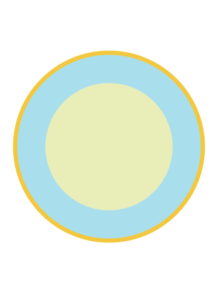
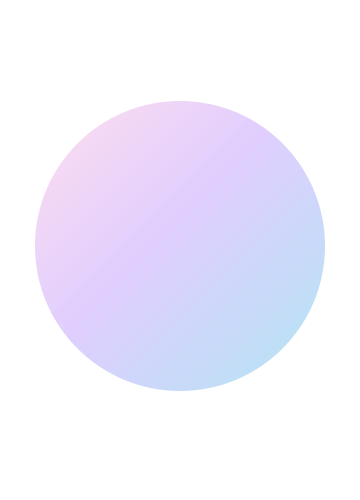
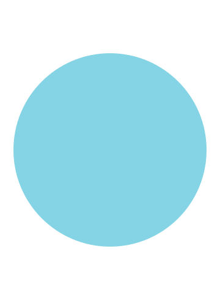
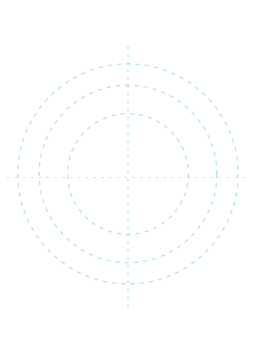

01
Wie ben ik?
Ik ben Basma en ik hou van nieuwe dingen ontdekken. Creativiteit speelt een grote rol in mijn dagelijks leven.
Ik heb eerder Software Developer gestudeerd en websites gemaakt. Nu ontdek ik steeds meer mijn creatieve kant.
02
Dingen die mij boeien
Technology
Technologie laat mij ideeën omzetten naar iets dat werkt.

Movement
Sport geeft mij energie en helpt mijn hoofd ontspannen.

Visuals
Kleuren, kleding en beelden geven mij nieuwe inspiratie.

Curiosity
Ik stel veel vragen en probeer dingen zelf uit.
03
Hoe ik werk
Ik werk graag vanuit beelden, kleuren en kleine ideeën. Daarna bouw ik langzaam verder totdat iets goed voelt.
Mijn proces is niet altijd netjes of helemaal gepland. Juist daardoor ontstaan soms mijn leukste ideeën.
04
Waar haal ik inspiratie vandaan?
Inspiratie vind ik vaak in kleine dingen om mij heen. Muziek, Pinterest en mode brengen mij op nieuwe ideeën.
Soms begint een ontwerp gewoon met één vreemde vorm. Daarna kijk ik waar het ontwerp vanzelf naartoe gaat.
05
Random things about me

Ik hou meer van imperfect dan superstrak.
Mijn hoofd heeft vaak meerdere ideeën tegelijk.
Ik wil mezelf creatief blijven uitdagen.06
Nu & later
Op dit moment ontdek ik verschillende vormen van ontwerpen. Daarbij combineer ik techniek steeds meer met creativiteit.
Later wil ik werk maken dat echt bij mij past. Niet perfect, maar wel herkenbaar en persoonlijk.
“Creating my own path, one weird idea at a time.”